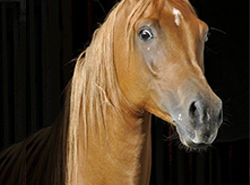
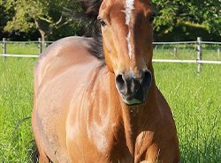
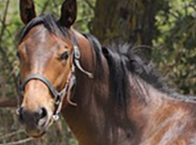
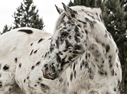
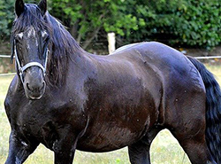

הסוס הינו בעל חיים מסוג היונקים בעל ארבע רגליים,תוחלת חיו של הסוס הינו בין 25-30 שנה אך ישנם סוסים שמגיעים ליותר.
בשלד הסוס יש כ-205 עצמות ומשקלו של הסוס יכול להגיע בין 500 ק"ג לטון נתון שמשתנה לפי גזע הסוס.
לסוס יש קיבה קטנה ביחס לגודלו אבל בעל מעיים ארוכים על מנת שתיהיה זרימה קבועה של אוכל בריא,
בממוצע סוס אוכל בין 11-7 ק"ג ביום ושותה בין 38-45 ליטר ביום.
לסוס יש מספר חושים מחודדים שעוזרים לו לשרוד בטבע,העיניים הגדולות של הסוס יכולות להגיע ל-350 מעלות,
ראייתו של הסוס ביום ובלילה טובה אך עיניו יכולות להבחין רק ב-2 צבעים(דומה לעיוור צבעים).
חוש הריח של הסוס מפותח ובעל שתי מערכות הרחה,אחת מובילה לנחיריים וחלל האף שעוזרת להריח את רוב הריחות,
השנייה מובילה למתחת חלל האף שתורמת בעיקר לניתוח פורומונים.
שמיעתו של הסוס טובה וכל פינה של אוזן יכולה להסתובב עד 180 מעלות מה שנותן לה שמיעה ברדיוס שלם מבלי להזיז את הראש,
רעשים מסוימים יכולים לגרום לסוס לחץ ואף עצבנות מחקר מראה ששמיעה מעל 21 דציבלים אינה מומלצת לסוסים.
תקופת היחום של הסוסים היא בין האביב לסתיו,אורך ההריון הינו 11 חודשים.
לרוב הסוסה תמליט רק סייח אחד אך יש מקרים בהם היא תמליט שני סייחים אך מצב זה מסוכן וכנראה שרק אחד מהם יוכל לחיות.
גזעי סוסים
ישנו מגוון רחב של גזעים אשר לכל סוג יש את התכונות והמראה שלו, ישנם גזעים שדומים בין אחד לשני אך יש פרטים קטנים שמבדילים ביניהם.
הנה הכרות קטנה עם מספר גזעים אינטילגנטים חזקים ומהירים:
 גזע ערבי - הוא גזע של סוסים שמקורו בחצי האי ערב. הסוסים הערביים בעלי צורת ראש וזנב ייחודיים, והוא בין הסוסים שהכי קל לזהותם.
גזע קווטר - הוא סוס המצטיין בריצות למרחקים קצרים של 500 מטר או פחות ויכול להגיע למשקל של 400 ק"ג.
 גזע ת'ורוברד - נחשב כסוס "חם מזג" וידוע בזכות נחישותו, זריזותו, ומהירותו, הוא בעל רגליים ארוכות וידוע כסוס מירוצים.
גזע אפלוסה - הוא גזע של סוסים בעל כתמים (לרוב בעל נקודות על הפרווה), הוא בעל אינטילגנציה גבוהה, סיבולת ומהירות.
פריזיאן - סוס הפריזיאן הוא הכלאה בין אנדלוסי לפריזי ובעל רעמה ארוכה וגרביים ייחודיים, בעבר הוא שימש כסוס מסא וסוס מלחמה ומשמש כיום שסוס משטרתי.
מקצבי רכיבה
הליכה
קצב ההליכה יכול להגיע ל-6 קמ"ש בממוצע, במהלך ההליכה שלוש רגליים של הסוס ישארו על הקרקע ורגל אחת תיהיה באוויר,
הרגל תוחלף בין ארבעתן וזה יתבצע בסדר הזה - רגל שמאלית אחורית, רגל שמאלית קידמית, רגל ימנית אחורית ורגל ימנית קידמית וכן הלאה.
בנוסף לכך בזמן ההליכה הסוס נעזר בראשו ומזיז אותו כלפיי מטה ומעלה בשביל לשמור על שווי המשקל שלו.
טרוט/טפיפה
קצב הטפיפה יכול להגיע ל-13 קמ"ש בממוצע, במהלך הטפיפה שתי רגליים יהיו באוויר ושתי רגליים על הקרקע ויוחלפו בצורה אלכסונית
וזה יתבצע בסדר הזה - רגל שמאלית אחורית, רגל ימנית קידמית ולאחר מכן רגל שמאלית קידמית ,רגל ימנית אחורית וכן הלאה.
קצב זה מתאים לצורך עבודה ממושכת ובניגוד לדהירה מהירה טפיפה יכולה להימשך לאורך שעות דבר שמשתנה בהתאם למזג אוויר,קרקע מתאימה וכו'.
בנוסף קצב זה יכול להיות לא נוח עקב הקפיצות בין החלפות הרגלים,
בקצב זה הרוכב ירכב בצורה של קום-שב בהתאם לקצב הסוס על מנת שיהיה לסוס יותר חופשיות תנועה והרוכב יהנה מרכיבה נוחה יותר.
קנטר/דהירה איטית
קצב הקנטר יכול להגיע בין 16-27 קמ"ש בממוצע,לקצב הקנטר יש שתי אפשרויות קנטר ימינה,קנטר שמאלה וכל אחד יתבצע בסדר רגליים שונה
קטנר ימינה יתבצע בסדר הזה - רגל שמאלית אחורית, רגל ימנית אחורית, רגל שמאלית קידמית יהיו באוויר לאחר מכן רגל ימנית קידמית
תצטרף אליהם ואחרי שניה של השהייה באוויר כל הרגלים חוזרות לקרקע שרגל ימנית קידמית תיגע אחרונה בקרקע ומובילה קדימה.
קנטר שמאלה יתבצע בסדר הבא רגל שמאלית אחורית, רגל ימנית אחורית, רגל ימנית קידמית יהיו באוויר לאחר מכן רגל שמאלית קידמית
תצטרף אליהם ואחרי שניה של השהייה באוויר כל הרגלים חוזרות לקרקע שרגל שמאלית קידמית תיגע אחרונה בקרקע ומובילה קדימה.
קצב הקנטר נוח יותר לרוכב מקצב הטפיפה היות ובטפיפה גוף הסוס נע מעלה ומטה ובקנטר התנועה יותר קדימה ואחורה.
גלאופ/דהירה מהירה
קצב הגלאופ יכול להגיע ל-50 קמ"ש בממוצע(המהירות הגבוהה ביותר שסוס הגיע אליה היא 89 קמ"ש), קצב זה הוא הקצב המהיר ביותר שיש.
קצב זה יתבצע בסדר הזה - רגל ימנית אחורית, רגל שמאלית אחורית, רגל ימנית קידמית, רגל שמאלית קידמית וכן הלאה
לפני שעוברים לגלאופ יש לוודא מס' דברים שישמרו על בטיחות הסוס והרוכב,
יש לוודא את שטח הריצה שאין בו בורות או מחסומים שיכולים לפצוע את הסוס או הרוכב
ויש לראות שהמסלול מתאים לריצה ארוכה על מנת לעצור את הסוס בזמן
יש לעמוד על קצות כפות הרגליים שנמצאות בארכובות בצורה חזקה
שתישמור גם על יציבות הרוכב וגם יתן לסוס חופש תנועה טוב יותר.
במהלך הריצה יש לשמור על מושכות יותר קצרות ופחות משוחררות,
כדי לשמור תמיד על שליטה בריצה במידה שנרצה לעצור או שמשהו יכנס למסלול הריצה.